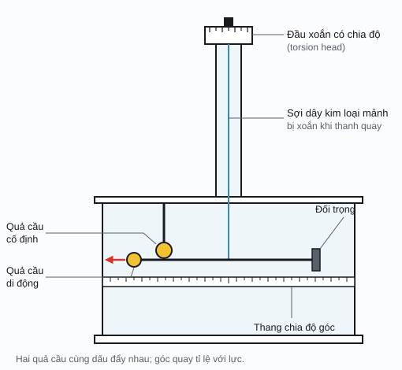
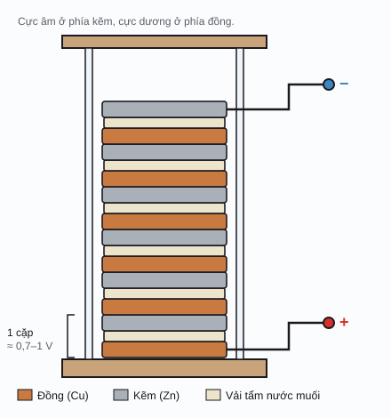

Sinh điện từ / Phần 1
Điện
Điện tích tạo ra điện trường, điện trường tạo ra lực, và sự chênh lệch điện thế đẩy các điện tích chuyển động thành dòng điện. Trong cơ thể, các điện tích đó là ion: Na⁺, K⁺, Ca²⁺, Cl⁻.
Điện tích & điện trường
Điện tích (electric charge), ký hiệu \(q\), là một tính chất của hạt khiến nó hút hoặc đẩy các hạt mang điện khác. Đơn vị là coulomb (C). Có hai loại: dương và âm. Cùng dấu thì đẩy nhau, trái dấu thì hút nhau.
Điện tích được lượng tử hóa (quantized): mọi điện tích đều là bội số nguyên của điện tích nguyên tố (elementary charge) \(e \approx 1{,}602 \times 10^{-19}\) C. Điện tích cũng được bảo toàn (conserved): tổng điện tích của một hệ cô lập không đổi.
Lực giữa hai điện tích điểm được mô tả bằng định luật Coulomb (Coulomb's law):
F: độ lớn lực (N); q₁, q₂: điện tích (C); r: khoảng cách (m); ε₀ ≈ 8,854 × 10⁻¹² F/m: hằng số điện (vacuum permittivity)
Thay vì nói "q₁ đẩy q₂ từ xa", vật lý hiện đại nói: q₁ tạo ra quanh nó một điện trường (electric field) \(\vec E\), và chính trường đó tác dụng lực lên q₂. Điện trường tại một điểm là lực trên mỗi đơn vị điện tích thử đặt tại đó:
Đơn vị của E: N/C, tương đương V/m. Biểu thức cuối là nguyên lý chồng chất (superposition principle): trường của nhiều điện tích là tổng vector các trường riêng lẻ.
Hai điện tích
Kéo rê điện tích, hoặc chỉnh q₁, q₂, rMột vài quy tắc của đường sức điện (electric field lines) mà bạn có thể kiểm tra trên demo:
- Đường sức đi ra từ điện tích dương và đi vào điện tích âm.
- Số đường sức gắn với một điện tích tỉ lệ với độ lớn của nó. Thử chọn "Lệch độ lớn": nhiều đường từ q₁ không về được q₂ mà chạy ra xa.
- Đường sức càng dày thì trường càng mạnh. Hai đường sức không bao giờ cắt nhau.
- Với hai điện tích cùng dấu, có một điểm ở giữa mà E = 0 (điểm trung hòa, neutral point).
Điện thế, điện trường & dòng điện
Điện thế
Điện thế (electric potential) \(V\) tại một điểm là thế năng điện trên mỗi đơn vị điện tích đặt tại đó. Đơn vị là volt (V = J/C). Điện thế giống như "độ cao" trong một địa hình: điện tích dương có xu hướng "lăn xuống" từ chỗ điện thế cao sang chỗ thấp.
Điều đo được trong thực tế luôn là hiệu điện thế (potential difference, voltage) giữa hai điểm, ví dụ điện thế màng tế bào hay tín hiệu ECG giữa hai điện cực.
U: thế năng (J); V: điện thế (V). Điện trường hướng theo chiều điện thế giảm nhanh nhất, và luôn vuông góc với các đường đẳng thế (equipotential lines). Với trường đều giữa hai bản song song: \(E = U/d\).
Địa hình điện thế
Kéo điện tích thử (ô vuông vàng) hoặc hai điện tíchDòng điện
Dòng điện (electric current) \(I\) là lượng điện tích đi qua một tiết diện trong một đơn vị thời gian, đơn vị ampere (A = C/s). Khi xét từng điểm bên trong vật dẫn, ta dùng mật độ dòng điện (current density) \(\vec J\), đơn vị A/m².
Trong kim loại, hạt mang điện là electron tự do. Trong dung dịch và mô sống, hạt mang điện là ion: ion dương đi theo chiều \(\vec E\), ion âm đi ngược lại, và cả hai cùng góp vào dòng điện theo chiều \(\vec E\). Khả năng dẫn điện của vật liệu được đặc trưng bởi độ dẫn điện (conductivity) \(\sigma\) hoặc nghịch đảo của nó là điện trở suất (resistivity) \(\rho\).
σ: độ dẫn điện (S/m); ρ = 1/σ: điện trở suất (Ω·m); R: điện trở (Ω); L: chiều dài (m); A: tiết diện (m²)
Dòng điện trong vật dẫn
Chọn vật liệu, chỉnh hiệu điện thế và kích thước mẫuỞ tần số thấp, màng tế bào gần như là chất cách điện, nên dòng điện trong mô chủ yếu chạy qua dịch ngoại bào (extracellular fluid), len lỏi giữa các tế bào. Vì vậy mô mỡ (tế bào to, xếp sát, ít dịch) dẫn điện kém hơn cơ nhiều lần, và cơ dẫn điện tốt hơn theo chiều dọc thớ so với chiều ngang (dị hướng, anisotropy). Khi tần số tăng, dòng điện bắt đầu "xuyên" qua màng; câu chuyện này sẽ được kể ở phần Tính chất điện môi của mô.
Tốc độ hạt trên hình không theo tỉ lệ thật. Vận tốc trôi (drift velocity) thực tế rất chậm: dòng 1 A trong dây đồng tiết diện 1 mm² chỉ làm electron trôi khoảng 0,07 mm/s. Tín hiệu điện truyền nhanh vì trường lan truyền nhanh, chứ không phải vì từng hạt chạy nhanh.
Bảng thuật ngữ
| Đại lượng | Ký hiệu | Đơn vị SI | Công thức chính | Ý nghĩa |
|---|---|---|---|---|
| Điện tíchelectric charge | \(q, Q\) | C | \(q = ne\) | Thuộc tính gây ra lực điện; lượng tử hóa và bảo toàn. |
| Lực điệnelectric force, Coulomb force | \(\vec F\) | N | \(F = k\lvert q_1q_2\rvert/r^2\) | Lực hút hoặc đẩy giữa hai điện tích. |
| Điện trườngelectric field | \(\vec E\) | V/m = N/C | \(\vec E = \vec F/q_0 = -\nabla V\) | Lực trên mỗi coulomb; đại lượng vector. |
| Điện thếelectric potential | \(V, \varphi\) | V = J/C | \(V = kq/r\) | Thế năng trên mỗi coulomb; đại lượng vô hướng. |
| Hiệu điện thếvoltage, potential difference | \(U, \Delta V\) | V | \(U = V_A - V_B\) | Thứ đo được bằng vôn kế hoặc điện cực. |
| Thế năng điệnelectric potential energy | \(U_e, W\) | J | \(U_e = qV\) | Năng lượng của điện tích trong trường. |
| Dòng điệnelectric current | \(I\) | A = C/s | \(I = dQ/dt\) | Lưu lượng điện tích qua một tiết diện. |
| Mật độ dòng điệncurrent density | \(\vec J\) | A/m² | \(\vec J = \sigma\vec E\) | Dòng điện trên mỗi m² tại một điểm; dùng nhiều trong đo liều (dosimetry). |
| Điện trởresistance | \(R\) | Ω = V/A | \(R = U/I = \rho L/A\) | Thuộc tính của một vật cụ thể (phụ thuộc hình dạng). |
| Điện trở suấtresistivity | \(\rho\) | Ω·m | \(\rho = 1/\sigma\) | Thuộc tính của vật liệu (không phụ thuộc hình dạng). |
| Độ dẫn điệnconductivity | \(\sigma\) | S/m | \(\sigma = J/E\) | Vật liệu dẫn điện tốt đến đâu; ở mô, phụ thuộc mạnh vào tần số. |
Con người đã phát hiện ra điện như thế nào
Mốc màu đỏ là các phát hiện gắn với sinh học, mốc màu xanh là vật lý thuần túy. Hai dòng này đan xen ngay từ đầu: tranh cãi về "điện động vật" của Galvani chính là thứ dẫn Volta đến chiếc pin đầu tiên.
- ~600 TCN
Thales xứ Miletus và hổ phách
Người Hy Lạp cổ ghi nhận hổ phách cọ xát hút được các vật nhẹ. Từ "electron" trong tiếng Hy Lạp nghĩa là hổ phách; đó là gốc của từ "electricity".
- 1600
William Gilbert, De Magnete
Gilbert phân biệt lực hút "kiểu hổ phách" với lực từ, chế tạo dụng cụ versorium để phát hiện vật nhiễm điện, và dùng từ Latin electricus.
- 1729
Stephen Gray: dẫn điện
Gray chứng minh "điện" có thể truyền dọc sợi chỉ ẩm đi xa hàng trăm feet, và phân biệt vật dẫn với vật cách điện.
- 1733
Charles du Fay: hai loại điện
Du Fay nhận ra có hai loại "điện" (ông gọi là vitreous và resinous): cùng loại thì đẩy, khác loại thì hút.
- 1745
Chai Leyden
Ewald von Kleist (1745) và Pieter van Musschenbroek ở Leiden (1746) độc lập tạo ra chai Leyden, tụ điện đầu tiên, có thể tích trữ điện và gây giật mạnh.
- 1747
Benjamin Franklin: dương và âm
Franklin đề xuất mô hình "một chất lỏng điện", đặt tên điện tích dương và âm, và ý tưởng điện tích được bảo toàn. Thí nghiệm diều (1752) cho thấy sét là hiện tượng điện.
- 1785
Charles-Augustin de Coulomb: định luật bình phương nghịch đảo
Dùng cân xoắn (torsion balance), Coulomb đo lực giữa hai quả cầu nhiễm điện và cho thấy lực tỉ lệ nghịch với bình phương khoảng cách.
- 1791
Luigi Galvani: "điện động vật"
Sau nhiều năm thí nghiệm, Galvani công bố rằng chân ếch co giật khi dây thần kinh và cơ được nối bằng kim loại, và cho rằng mô sống tự sinh ra điện (animal electricity). Đây là khởi đầu của điện sinh lý học (electrophysiology).
- 1800
Alessandro Volta: pin Volta
Volta phản bác: dòng điện đến từ sự tiếp xúc của hai kim loại khác nhau, ếch chỉ là "máy đo". Để chứng minh, ông chồng các đĩa kẽm, đồng và vải tẩm nước muối thành pin Volta (voltaic pile), nguồn dòng điện liên tục đầu tiên. Về sau, cả hai đều đúng một phần.
- 1827
Georg Ohm
Ohm công bố quan hệ tỉ lệ giữa dòng điện và hiệu điện thế trong mạch, ngày nay là định luật Ohm.
- 1834
Michael Faraday: ion và đường sức
Nghiên cứu điện phân, Faraday (cùng William Whewell) đặt ra các từ ion, anode, cathode, electrode. Ông cũng hình dung lực điện và lực từ bằng các "đường sức" lấp đầy không gian, tiền thân của khái niệm trường.
- ~1840
Matteucci và du Bois-Reymond
Carlo Matteucci đo được dòng điện từ cơ bị tổn thương. Emil du Bois-Reymond phát hiện "dao động âm" (negative variation) khi dây thần kinh hoạt động, chính là thứ ngày nay gọi là điện thế hoạt động (action potential).
- 1850
Hermann von Helmholtz: tốc độ xung thần kinh
Đo trên dây thần kinh ếch, Helmholtz thấy xung thần kinh chỉ đi khoảng vài chục m/s (cỡ 25–40 m/s), chậm hơn nhiều so với điều người ta từng nghĩ. Tín hiệu thần kinh hóa ra không phải dòng điện chạy trong dây dẫn đơn thuần.
- 1897
J. J. Thomson: electron
Thí nghiệm tia âm cực cho thấy tồn tại một hạt mang điện âm nhỏ hơn nguyên tử nhiều lần: electron.
- 1909
Robert Millikan: điện tích nguyên tố
Thí nghiệm giọt dầu (công bố 1909–1913) đo được điện tích của electron và xác nhận điện tích là lượng tử.


Tài liệu tham khảo
- J. Malmivuo, R. Plonsey, Bioelectromagnetism: Principles and Applications of Bioelectric and Biomagnetic Fields, Oxford University Press, 1995. Bản đọc trực tuyến: bem.fi/book (chương 1 có lịch sử chi tiết).
- D. J. Griffiths, Introduction to Electrodynamics, chương 2 (tĩnh điện).
- Luigi Galvani và Hermann von Helmholtz trên Wikipedia.
- Độ dẫn điện của mô trong demo dòng điện: giá trị gần đúng ở tần số thấp, theo cơ sở dữ liệu IT'IS Foundation và Gabriel et al. (1996). Sẽ trình bày chi tiết ở phần 4.